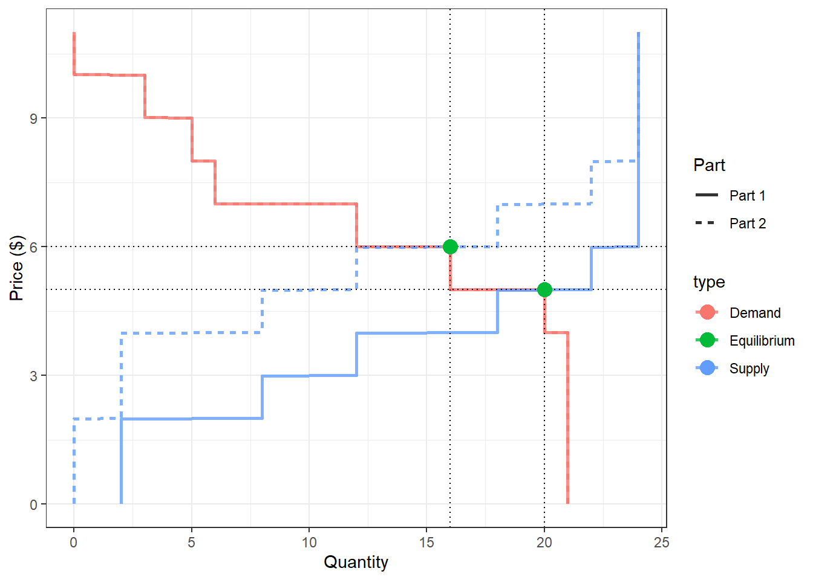
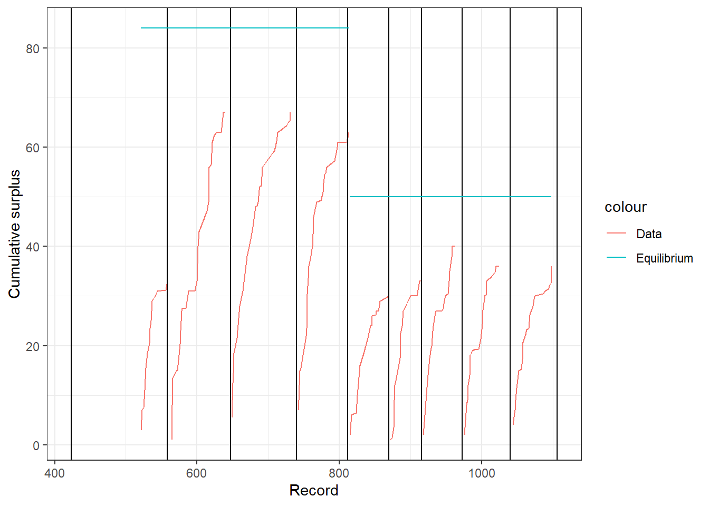
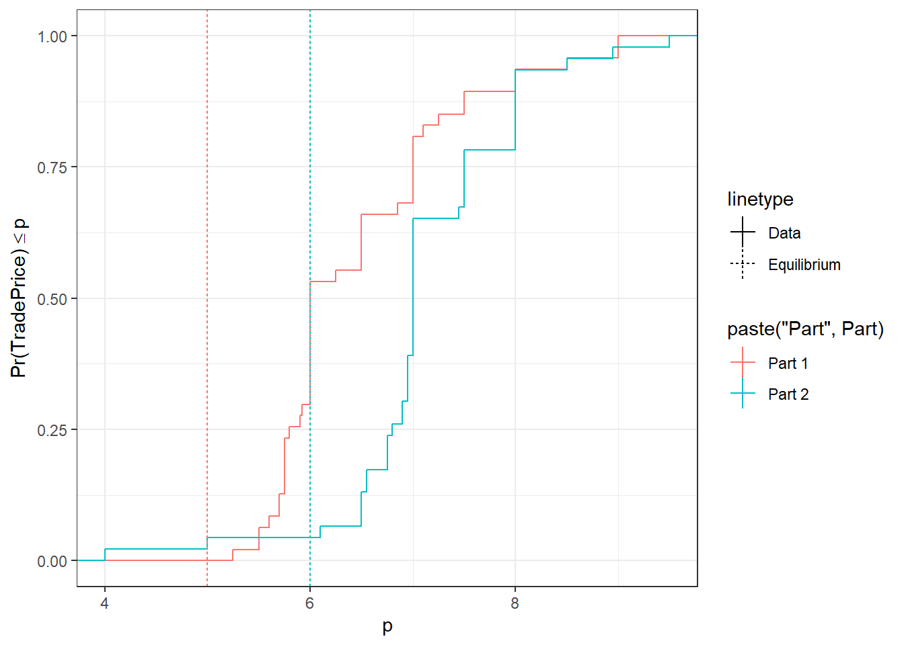
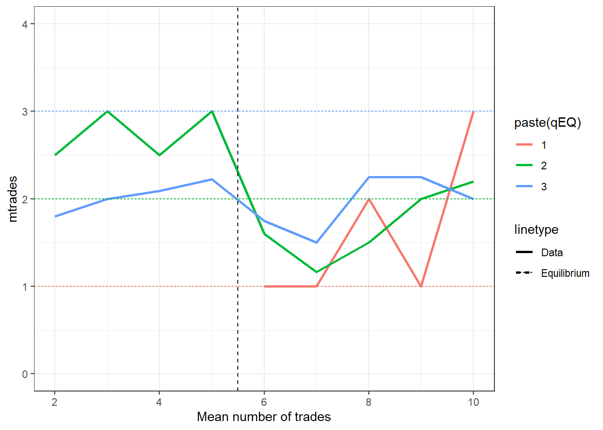

11 Markets
11.1 Your homework assignment
What could have happened in the market between Parts 1 and 2? Tell me one thing the government could have done to make this change, and one thing that could have happened not involving the market.
Draw the supply and demand curves for both parts of the experiment. Label equilibrium price and quantity
On a separate plot, show every trade price for every round. Include your predicted prices from Part 1. (this is a deliberately vague question, I am asking you to think about how to communicate the results of this experiment graphically)
Compute the predicted producer, consumer, and total surplus in both parts. Compare these to the actual consumer, producer, and total surplus from the experiment (dividing this up by round).
Write a short paragraph telling me your main findings. When needed, make reference to the three plots you made.
(6260 students only) The model also makes predictions about how many items each seller will sell, and how many items each buyer will buy. Comment on how well the theory is predicting these individual-level quantities (Again, this is another deliberately vague question. I am looking to see how you approach this problem)
11.2 Solutions
library(tidyr)
library(dplyr)
library(ggplot2)
DRaw<-data.frame(read.csv("PS02data.csv"))
D<-(DRaw
%>% mutate_all(.funs =as.numeric)
%>% mutate(Part = 1+(Round>=6))
)
D$Status<-as.factor(DRaw$Status)
D$Role<-"Buyer"
D$Role[is.na(D$Value)]<-"Seller"
knitr::kable(head(D))| X | Record | Round | ID | Unit | Value | Bid | Cost | Ask | Status | Market_Price | Earnings | Cumulative_earnings | Part | Role |
|---|---|---|---|---|---|---|---|---|---|---|---|---|---|---|
| 1 | 2 | 1 | 3 | 1 | 6 | 0 | NA | NA | i | NA | NA | NA | 1 | Buyer |
| 2 | 3 | 1 | 3 | 2 | 6 | 0 | NA | NA | i | NA | NA | NA | 1 | Buyer |
| 3 | 4 | 1 | 3 | 3 | 5 | 0 | NA | NA | i | NA | NA | NA | 1 | Buyer |
| 4 | 32 | 1 | 4 | 1 | 10 | 0 | NA | NA | i | NA | NA | NA | 1 | Buyer |
| 5 | 33 | 1 | 4 | 2 | 7 | 0 | NA | NA | i | NA | NA | NA | 1 | Buyer |
| 6 | 34 | 1 | 4 | 3 | 7 | 0 | NA | NA | i | NA | NA | NA | 1 | Buyer |
Parameters<-data.frame(read.csv("PS02Parameters.csv"))What could have happened in the market between Parts 1 and 2? Tell me one thing the government could have done to make this change, and one thing that could have happened not involving the market.
Draw the supply and demand curves for both parts of the experiment. Label equilibrium price and quantity
Solution: Here I will do questions 1 & 2 together, as it helps to have the supply and demand diagram to work out what happened.
# extract values and costs from rounds 1 and 6
SupplyDemand<-data.frame()
EQ<-data.frame()
P<-seq(0,max(Parameters$v, na.rm=T)+1,0.01)
for (rr in 1:2) {
# supply and demand functions
Qd<-function(p,r) {
v<-Parameters %>% filter(Part==r) %>% select(v)
sum(v>=p,na.rm=T)
}
Qs<-function(p,r) {
c<-Parameters %>% filter(Part==r) %>% select(c)
sum(c<=p,na.rm=T)
}
Q<-apply(as.matrix(P),1,FUN = {function(p) Qs(p,rr)})
tmp<-data.frame(P,Q)
tmp$type="Supply"
tmp$Part = paste("Part",rr)
SupplyDemand<-rbind(SupplyDemand,tmp)
ExcessDemand<-Q
Q<-apply(as.matrix(P),1,FUN = {function(p) Qd(p,rr)})
tmp<-data.frame(P,Q)
tmp$type="Demand"
tmp$Part = paste("Part",rr)
SupplyDemand<-rbind(SupplyDemand,tmp)
ExcessDemand<- -(ExcessDemand-Q)
ii<-sum(1*!(ExcessDemand<=0))
Peq<-round(P[ii]) # I know there is an integer solution
Qeq<-Q[ii]
tmp<-data.frame(Peq,Qeq)
tmp$Part<-paste("Part",rr)
EQ<-rbind(EQ,tmp)
}print(EQ)## Peq Qeq Part
## 1 5 20 Part 1
## 2 6 16 Part 2EQ$type<-"Equilibrium"
plt<-(
ggplot(SupplyDemand,aes(x=Q,y=P,color=type,group=paste(type,Part),linetype=Part))
+geom_path(size=1,alpha=0.8)
+theme_bw()
+xlab("Quantity")+ylab("Price ($)")
+geom_vline(data=EQ,aes(xintercept=Qeq),color="black",linetype="dotted")
+geom_hline(data=EQ,aes(yintercept=Peq),color="black",linetype="dotted")
+geom_point(data=EQ,aes(x=Qeq,y=Peq),size=4)
#+theme(legend.position="none")
)
print(plt)
From the above Figure, we can see that supply has shifted to the left (or up, by $2). Two possible causes of this could be:
- The government imposes a $2 tax on sellers
- An input cost increases
- On a separate plot, show every trade price for every round. Include your predicted prices from Part 1. (this is a deliberately vague question, I am asking you to think about how to communicate the results of this experiment graphically)
Solution
library(latex2exp)
NewRound<-c()
for (rr in 1:10) {
NewRound[rr]<- max((D %>% filter(Round==rr ))$Record)-1
}
Summary<-(D %>% filter(Record>=450 & Status=="t") %>% group_by(Round)
%>% summarize(
m=mean(Bid,na.rm=T),
s=sd(Bid,na.rm=T))
)
D <- D %>% left_join(Summary,by=c("Round"))
(
ggplot(D %>% filter(Status=="t"),aes(x=Record))
+geom_point(aes(y=Bid,color="data"))
#+geom_line(aes(y=Bid,color="data"))
+theme_bw()
+geom_line(aes(x=Record,y=m,group=Round,color="mean"))
+geom_ribbon(aes(x=Record,ymax=(m+s),ymin=(m-s),fill="\U00B1 1 sd"),alpha=0.1)
+geom_vline(xintercept=NewRound)
+ylim(c(0,11))
+geom_line(aes(x=Record,y=EQ$Peq[Part],group=Part,color="Equilibrium"))
+ylab("Traded price ($)")
+xlab("Record number")
+ylim(c(3,10))+xlim(c(500,1100))
)
- Compute the predicted producer, consumer, and total surplus in both parts. Compare these to the actual consumer, producer, and total surplus from the experiment (dividing this up by round).
# Surplus for each part
Parameters<-(Parameters
%>% mutate(EQ_CS = v-EQ$Peq[Part],
EQ_PS = EQ$Peq[Part]-c)
%>% mutate(EQ_CS = EQ_CS*(EQ_CS>=0),
EQ_PS = EQ_PS*(EQ_PS>=0)
)
)
Surplus<-(
Parameters
%>% group_by(Part)
%>% summarize(CS = sum(EQ_CS,na.rm=T),PS = sum(EQ_PS,na.rm=T))
%>% mutate(TS = CS+PS)
)
knitr::kable(Surplus)| Part | CS | PS | TS |
|---|---|---|---|
| 1 | 42 | 42 | 84 |
| 2 | 26 | 24 | 50 |
D <- (D
%>% filter(Status=="t")
%>% group_by(Round)
%>% mutate(CumlativeSurplus = cumsum(Earnings))
)
(ggplot(D %>% filter(Status=="t"))
+geom_line(aes(x=Record,y=CumlativeSurplus,group=Round,color="Data"))
+theme_bw()
+geom_vline(xintercept=NewRound)
+geom_line(aes(x=Record,y=Surplus$TS[Part],group=Part,color="Equilibrium"))
+ylab("Cumulative surplus")
)
knitr::kable(
D %>% group_by(Round,Part)
%>% summarize(FracSurplus = max(CumlativeSurplus/Surplus$TS[Part],na.rm=T))
)| Round | Part | FracSurplus |
|---|---|---|
| 2 | 1 | 0.3928571 |
| 3 | 1 | 0.7976190 |
| 4 | 1 | 0.7976190 |
| 5 | 1 | 0.7500000 |
| 6 | 2 | 0.6000000 |
| 7 | 2 | 0.6600000 |
| 8 | 2 | 0.8000000 |
| 9 | 2 | 0.7200000 |
| 10 | 2 | 0.7200000 |
- Write a short paragraph telling me your main findings. When needed, make reference to the three plots you made.
Solution We studied a market experiment in which buyers and sellers traded a fictitious good. In the second part of the experiment, the supply curve shifted up by $2 (see first Figure). In general, traded prices were above the equilibrium, but they moved up on average in the second part:
(
ggplot(D %>% filter(Status=="t"),aes(x=Market_Price,color=paste("Part",Part),linetype="Data"))
+stat_ecdf()
+geom_vline(data=EQ,aes(xintercept=Peq,color=Part,linetype="Equilibrium"))
+theme_bw()
+xlab("p")+ylab(TeX("$\\Pr(\\mathrm{Trade Price}) \\leq p$"))
)
- (6260 students only) The model also makes predictions about how many items each seller will sell, and how many items each buyer will buy. Comment on how well the theory is predicting these individual-level quantities (Again, this is another deliberately vague question. I am looking to see how you approach this problem)
Solution
First, let’s make a list of how many items each buyer and seller should trade in equilibrium
Parameters<-(Parameters
%>% mutate(ShouldBuy = v>= EQ$Peq[Part],
ShouldSell = c<= EQ$Peq[Part])
)
EQQdemand<-Parameters %>% group_by(idBuyer,Part) %>% summarize(qEQ = sum(1*ShouldBuy)) %>% mutate(ID=idBuyer,Role="Buyer")
EQQsupply<-Parameters %>% group_by(idSeller,Part) %>% summarize(qEQ = sum(1*ShouldSell)) %>% mutate(ID=idSeller,Role="Seller")
EQindividual<-rbind(EQQdemand,EQQsupply)[,c("ID","Part","qEQ","Role")]
#knitr::kable((EQindividual))Now, let’s work out what these were empirically:
TradeCounts<-(D %>% filter(Status=="t")
%>% group_by(Round,Part,ID,Role)
%>% summarize(ntrades=n())
%>% left_join(EQindividual,by=c("ID","Part","Role"))
%>% group_by(Part,qEQ,Round)
%>% summarize(mtrades=mean(ntrades,na.rm=T,sdtrades=sd(ntrades)))
)
(ggplot(data=TradeCounts,aes(x=Round,y=mtrades,color=paste(qEQ)))
+geom_line(aes(linetype="Data"),size=1)
+geom_hline(aes(yintercept=1,color="1",linetype="Equilibrium"))
+geom_hline(aes(yintercept=2,color="2",linetype="Equilibrium"))
+geom_hline(aes(yintercept=3,color="3",linetype="Equilibrium"))
+geom_vline(aes(xintercept=5.5),color="black",linetype="dashed")
+ylim(c(0,4))
+xlab("Mean number of trades")
+theme_bw()
)
The theory is not predicting the number of items each player will trade well. For example, in the first part of the experiment, the players who should make 2 trades on average trade more than those who should trade two.